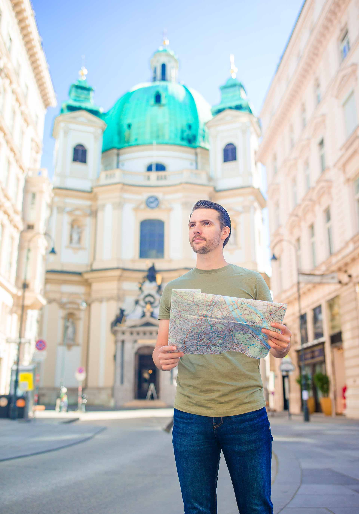
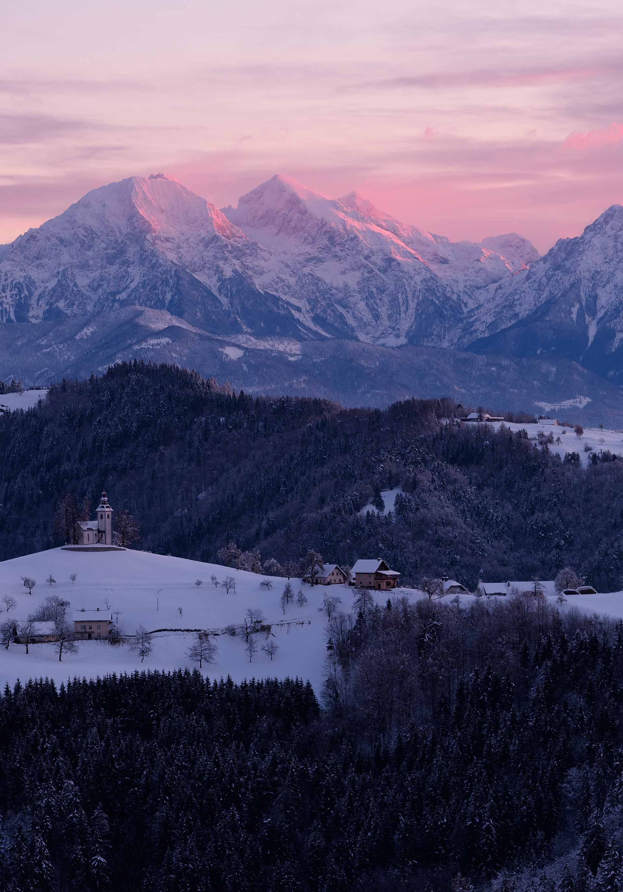

Efsanevi bestecilerin ve genişleyen kırsal kesimlerin ülkesi, sizi diğerlerinden farklı bir yolculuğa davet ediyor. Zicasso'nun uzmanları, gezginlerin renkli köyleri, görkemli dağ sıralarını ve Avrupa'nın kültür merkezi olarak duran Barok Viyana şehrini keşfetmesineolanak tanıyan 3.600'den fazla güzergah oluşturdu. Aşağıdaki örnek güzergahlardaki olanakları ve Avusturya Gezi Rehberindeki yararlı bilgileri keşfederek Avusturya'nın sonsuz cazibesini kucaklayın.
Avusturya’nın neredeyse üçte ikisi Alplerle kaplıdır; Salzburg, Kuzey Tirol ve Doğu Tirol gibi bölgeler olağanüstü manzaralara ev sahipliği yapar. Bunların arasında, Avusturya’nın Göller Bölgesi olarak bilinen büyüleyici Salzkammergut bölgesi öne çıkar. Mavimsi yeşil tonlarıyla parıldayan yaklaşık yetmiş göl, Barok tarihiyle dolup taşan Salzburg kentine sadece kısa bir mesafe uzaklıktadır. Avusturya’nın su zenginliği yalnızca göllerle sınırlı değildir. Ülkenin kuzeyini boydan boya geçen görkemli Tuna Nehri, Avrupa’nın doğuya doğru akan tek büyük nehri olarak, Viyana, Bratislava ve Budapeşte arasında bir hat oluşturur ve sonunda Karadeniz’e ulaşır. Turlarımız Viyana’nın nehirlerini, göllerini ve dağlarını huzurlu ama macera dolu, her zaman da sürdürülebilir yollarla keşfeder — ister yerel bisiklet kiralama ve rehber eşliğinde, ister güzergâh üzerindeki en iyi bağımsız işletmeleri gösteren bir harita ile.
Avusturya’nın görkemli başkenti Viyana, aynı zamanda sakin ve zarif bir şehirdir. Ringstrasse boyunca uzanan sokaklarda kahve evleriyle opera binası arasında yavaş bir tempoda gezinebilir, Orta Avrupa’nın solgun ama asil ihtişamını Museum Quarter’daki geniş galerilerde, görkemli Aziz Stefan Katedrali’nde ve Hofburg Sarayı’nda hissedebilirsiniz. Viyana’yı Budapeşte ile birleştirmek de mümkündür; bisiklet, tren veya rehberli turlar aracılığıyla iki şehir arasında seyahat ederek eski Avusturya-Macaristan İmparatorluğu’nun tarihî ruhunu tadabilirsiniz. Avusturya turlarımız genellikle şehirde geçirilen zamanı ülkenin diğer bölgelerinde yapılacak keşiflerle birleştirir ve turizmin faydalarını daha küçük yerleşimlere de yaymayı hedefler. Büyük gruplar yerine küçük gruplarla seyahat etmek, hem başkentte hem de çevresindeki küçük restoran ve işletmelerde yerel halk tarafından sıcak bir şekilde karşılanmanıza olanak tanır — onları kalabalıkla boğmadan.
Avusturya’nın dörtte birinden fazlası koruma altındaki doğal alanlardan oluşur; halkı Alplerini sever ve bu dağları yürüyerek keşfetmeyi bir yaşam biçimi haline getirmiştir. Bu nedenle ülke, mükemmel şekilde işaretlenmiş yürüyüş parkurlarıyla, ayrıca dağlara yorucu tırmanışlar olmadan ulaşmanızı sağlayan teleferik ve sandalyeli lift sistemleriyle donatılmıştır. En popüler yürüyüş rotalarımızdan bazıları, Salzburg yakınlarındaki Salzkammergut bölgesine ya da ülkenin en yüksek dağı Grossglockner’in eteklerinde yürüyüş yapabileceğiniz sessiz Doğu Tirol bölgesine uzanır. Yürüyüşler sırasında dağ kulübelerinde mola vererek hem dinlenir hem de turizm yoğunluğundan uzakta kalan bölge ekonomisine katkıda bulunursunuz. Günün sonunda ise bir kaplıca kasabasındaki termal sularda rahatlayabilirsiniz.
Dağlarla çevrili bir terasta, karlı zirvelerin ardından yükselen sabah güneşi eşliğinde “güneşe selam” duruşlarını yaptığınızı hayal edin. Avusturya’daki yoga tatillerimiz, ilham verici Alp manzaralarının ortasında ve tertemiz dağ havasında gerçekleşir. Bu yolculuklar yalnızca stüdyoda başlayan ve biten bir yoga deneyimi değildir; aynı zamanda orman banyosu, doğal göllerde yüzme ve doğa yürüyüşleri gibi etkinliklerle bütüncül bir zindelik deneyimi sunar. Avusturya’nın büyüleyici doğası, yerel kaynaklı malzemelerden hazırlanan yemekler ve çevre dostu, bitki temelli beslenme seçenekleriyle bu deneyimi daha da özel kılar.
Avusturya’da mevsimler dağları öylesine değiştirir ki, sanki tek bir ülkede iki farklı diyarı deneyimlersiniz. Karın doğayı dönüştürücü gücü yalnızca büyüleyici bir manzara yaratmakla kalmaz, aynı zamanda keşfetmek için de çağırır. Seefeld ve Innsbruck gibi dağ kasabalarından yola çıkarak kendinizi gerçek bir kış masalının içinde bulabilirsiniz. Avusturya, elbette, dünyaca ünlü bir kayak merkezi olarak tanınır; ancak bizim turlarımız su ve enerji tüketimi yüksek yapay kar kullanılan etkinliklerden uzak durur. Bunun yerine kış yürüyüşleri, kar ayakkabısıyla yapılan doğa gezileri ve tempolu kuzey disiplini kayakları (cross-country skiing) ile doğayı sürdürülebilir biçimde keşfetmeyi öneririz. Bu rotalar, yoğun kış sporları sezonunda bile dağların dingin yanını keşfetmenizi sağlar; böylece manzarayı kayakçı kalabalıklarıyla değil, kartallar ve dağ keçileriyle paylaşırsınız.
Renkli panjurları ve tarihi soğan kubbeli kiliseleriyle Avusturya’nın Alp kasabaları, neredeyse güzellikleriyle baş döndürecek kadar etkileyici. Fakat bu yapılarının ötesinde, gerçekten hayranlık uyandıran bir manzara uzanıyor: tatillerimiz sizi doğanın kalbine yürüyüşlere, karla kaplı yamaçlarda kar ayakkabılarıyla keşiflere ve büyüleyici dağ manzaraları eşliğinde yoga deneyimlerine götürüyor.
Suyun kıyısındaki huzuru da düşünün. Kuzey Gölleri dinginliği ve sakinliği sunarken, Tuna Nehri ülkenin içinden kıvrılarak geçiyor; yol boyunca sevimli köylerden, tarihi patikalardan geçen muhteşem yürüyüş ve bisiklet rotaları sağlıyor. Avusturya Alpleri deneyiminizi zenginleştirmek için tatillerimizde yerel kaynaklardan yararlanıyoruz — konaklamadan yiyeceğe, dağları kartpostal güzelliğindeki kasabalar kadar iyi tanıyan muhteşem yerel rehberlerin hizmetlerine kadar.
Kişisel zevkinize uygun seyahat deneyimleri için ilham alın

Vienna, Krems, Melk, Linz, Hallstatt +4 daha fazla

Vienna,Hallstatt, Bad Ischl, Salzburg more

Munich, Zell am See, Werfen, Salzburg, Vienna more
Vienna, Linz, Salzburg, Klagenfurt more

Vienna, Hallstatt, Innsbruck more
Austria is most definitely about mountains and music. Just like a symphony, it has everything thrown into its musical mix: Alpine peaks, with Grossglockner the highest in Hohe Tauern National Park, boom out like a rousing brass div. The serene lakes of the north are the strings section, a series of soothing, tranquil movements that you can walk or cycle through in total awe of their purity and pitch perfect beauty.
"Download lots of Mozart before you come hiking here on your MP3. He does rousing well, as do his beloved native landscapes"
The wind section is Seefeld, with its Olympian action filled winter sports history, but each village and valley proffering its own perfect concerto, but plenty of places to grab solo moments, cross country skiing away from the crowds. The Tyrol is percussion, quirky and independent, but totally unmissable. And the Danube is like the composer, weaving through it all masterfully, bringing together the most harmonious holiday.


like the Swarovski Crystals that are made here. Pure, dazzling, clear and simply beautiful.
just for winter holidays. It has one of the most superb hiking and cycling networks in Europe.
The sport often plays second fiddle to downhill skiing in Austria, but it’s a lovely way to interact with the landscape. Cross country trails are far more peaceful and you don’t need to rely on ugly mountain infrastructure, fake snow or expensive lift passes to get going. Look out for foxes, weasels and hares, all wearing winter white.
Hohe Tauern National Park in East Tyrol is amazingly wild. Its famous centrepiece is the enormous Grossglockner, tallest in Austria – though there are actually hundreds of peaks pushing 3,000m in the park, which have the nice effect of scattering visitors, so you can find plenty of unexplored corners. Golden eagles flourish here – you’ll have to ask one of them what the best view of the landscape is.
For some reason, Austria has a reputation for attracting the over-65s – which is great, but people of all ages can get involved in the sporty side of the Alps. Austria’s landscape self-shaped itself into a natural theme park: try rodelling – tobogganing – in winter, and canyoning in summer.
Well, you wouldn’t want to run up the Alps, would you? (Although you can – check out the Grossglockner Ultra-Trail). Hiking used to be the only way to get across the Alps if you weren’t Hannibal – and it remains one of the most rewarding ways to see the landscape. And contrary to what you might think, you don’t have to be super-fit to climb, as there are chairlifts to the top.
It seems universally true that when a country names a region its ‘Lake District’, that region turns out to be extra-pretty. Austria’s Salzkammergut is just east of Salzburg, its glacial lakes perfectly reflecting the church spires and colourful facades of the wealthy towns on their shores. Halstatt owes its architecture to the profits of salt mining, whilst Bad Ischl is a spa town. It’s a well-trodden region but cycling can get you away from the crowds and catapult you into glorious mountain scenery.
The Tyrol region seems more Austrian than Austria. Here, every village is its own rich world and accents can change from valley to valley. There’s a lot of money in the area, thanks to posh resorts but the trails are as rocky and rugged as you’d wish. Explore from Achenkirch village to reach the Kawendel and Rofan Mountains.
Austria counts itself as one of the world’s snow-sure skiing destinations. Skiing is big business here, and to deliver on the promise of pristine skiing conditions a lot of money has gone into top of the range snow-making machines. Some 70% of Austria’s slopes can now be covered with artificial snow. We think fake snow is a no go. It’s costly and uses a huge amount of water. Exploring the natural environment regardless of the weather is far more rewarding.
Some people’s only impression of Austria comes from a 1965 Rodgers and Hammerstein musical about a nun who finds love – and forms a family of Nazi-evading singers. It’s the equivalent of thinking Hairspray is an accurate depiction of modern-day Baltimore, or The Mikado modern-day Japan. Whilst the Von Trapp family were real, their story is very different from the film. Most Austrians have never heard of the film, and are baffled by the Sing-a-Long tours in Salzburg.
Surely one of the most glamorous of the Tyrolean ski resorts, St Anton’s reputation has meant it’s an expensive crush of swishy salopettes and real fur headbands, lots of Stag Parties (sometimes earning it the nickname ‘St Manton’) and astronomically expensive restaurants, spas and après ski. Seefeld, round the corner, is a better base, and also particularly nice for summer hiking.
If snow is your thing, late Nov-April is, on average, perfect for frosty fun. Austria likes its rain, so always bring an umbrella just in case. June-Aug bring beautiful summer weather, particularly the further south you go, but never too scorching. Of course the high mountains are always cooler, but with risks of lightning in summer. Christmas and New Year in Austria are magically festive, with glühwein and Christmas markets everywhere you go, no matter how remote. Hike in autumn to catch the wine harvest, with many festivals to accompany it.
The best time to go on a winter holiday in Austria is January to mid-March, when there’s snow already on the ground and more can fall at any time. Most trips base themselves in Tyrolean villages, typically around 1,000m up, so it’s cold. Average daytime temperature in winter is around -5°C, though it can fall as low as -15°C with around 8 to 10 hours of daylight. Throughout winter there are periods of clear bright weather and in February and March it can become surprisingly warm in the sun. But don’t rule out the chance of a stormy day.
| Ay | Min °C | Max °C | Yağmur(mm) |
|---|---|---|---|
| Oca | -3 | 2 | 31 |
| Şub | -1 | 4 | 32 |
| Mar | 2 | 10 | 35 |
| Nis | 6 | 16 | 43 |
| May | 10 | 20 | 62 |
| Haz | 13 | 23 | 72 |
| Tem | 15 | 26 | 68 |
| Ağu | 15 | 25 | 61 |
| Eyl | 11 | 21 | 42 |
| Eki | 7 | 15 | 37 |
| Kas | 2 | 8 | 46 |
| Ara | -1 | 3 | 36 |
As efficient and exquisite as Switzerland, but without the astronomic costs, Austria packs a pretty punch for a small country. Although it is best known for its downhill skiing holidays – hardly surprising, given that Seefeld has hosted the Winter Olympics twice – cross country skiing infrastructures here are second to none, especially in the Tyrol region. Similarly, the country’s trails are all maintained to perfection when the snows melt, revealing Edelweiss filled meadows (and yes it is the national flower, but the Sound of Music is definitely not a national favourite) and valleys that beckon hikers and bikers, climbers and rafters.
With Grossglockner at its heart, Austria’s highest mountain at 3,797m, this is alpine arcadia. Summer and winter. In fact, it opens up to a world of high mountain activities in summer, hiking and biking, rafting and canyoning, climbing and alpinism. You don’t have to be a Chris Bonington to enjoy the beauty, however, with plenty of hiking trails to keep walkers of all levels happy here for days on end.


These are almost stupidly beautiful, with mountains reflected in the water, sailing boats and castles, cafes with cakes the size of castles, and cosy taverns. Cycling or, in winter, cross country skiing around them is the perfect way to see the likes of Attersee with the small town of St Georgen tucked in between it and the mountains. Or watersport filled Traunsee, with the cobbled market town of Gmunden lining the shore.
In the Austrian Tyrol, with Oetz as the gateway, this is a mecca of mountain activity, summer and winter. Cut through a range of different peaks belonging to the Stubai Alps, it feels like this meadow and woodland filled valley goes on forever. Indeed, your days can be packed with fun forever here with superb set ups for white water rafting, climbing, hiking, canyoning and mountain biking, making it a family favourite.


Voyaging along the Danube is a tradition that goes back generations. Hikers and cyclists still love to follow the flow of Europe’s second largest river through a variety of landscapes, although Austria’s Wachau Valley is one of the prettiest. Travelling west to east, just like the river, is to travel through history, with ancient castles, ‘heurigen’ or wine taverns, vineyards and monasteries still bordering the shores of this fine, ancient artery.
A Tyrolean town but also a region that is made up of five villages that are most well known because they have hosted the Winter Olympics twice. Just 17km from Innsbruck, there are over 300km of cross country skiing trails here, travelling along plateaus that overlook the River Inn valley, with two main mountain areas to play in: Gschwandtkopf and Rosshütte.


A chocolate box village and gateway to the Gschnitzal and Obernberg Valleys. Even they don’t sound real, but they will feel real as you push those calves up through the ancient Tyrolean forests, in the foothills of Habicht (3,277m high), one of the Stubai Alps. With a magnificent circuit of mountain huts to complete, as well as ancient farmlands and pastures, this is all so easy on the wandering eye. With or without snow.
Part of what makes the Tyrol so special is its backdrop of A-grade mountains – but that’s only part of it. It’s a place where mountain huts cut strange figures on the mountainside after the snow has melted, their wonky foundations jutting off the slopes. It’s a place where every village has its own brass band, and there’s always a half-drunk bottle of apricot schnapps on the side, ready for hosting duties. It’s a place where at least 30 percent of all farms are organic, and farmers still find scythes the best way to cut the grass. Here, every autumn is marked by the parade of cattle coming down off the mountains, decorated from horn to nostril with flowers and bells, to mark their safe return from the high pasture.
"Austrian writer Ludwig Steub praised the ‘blue battlements’ of the Tirolese mountains. You might also praise its apricot schnapps."
The Tyrol is famous for winter sports – particularly skiing, which was ‘invented’ in its modern form in St Anton. But come to the area in the summer and you’ll experience a very different side. The chairlifts and cable cars are still running, but now they transport you into a paradise of meltwater and meadows. You can hike to your heart’s content, and never run out of trail.
It can be hard to pin down this state when you first read about it: the Tyrol, or North Tyrol, to be specific, is a thin corridor through the mountains, just below Bavaria. Innsbruck, its state capital, is famous for being ski-season central. If you look on a map you’ll see that East Tyrol appears, separate and smaller, below Salzburg. It’s smaller, but East Tyrol shouldn’t be overlooked. It’s home to the Grossglockner, Austria’s highest mountain and the High Tauern National Park which contains it. There’s also, confusingly, South Tyrol, but this is Italian. Unless specified, Tyrol in Austria refers to North Tyrol.
Achensee is the largest lake in the Tyrol region. It’s very long and very skinny, trickling through the Tyrol like a larimar-coloured fjord. In summer its shores are as close as Austria gets to beach-like. Climb Rofanspitze, a big peak above Achensee, it’s a solid 2,259m above sea level, and views from its cross-topped summit are very memorable.
The High Tauern National Park in East Tyrol is one of central Europe’s biggest national parks. It’s a great setting for Austria’s highest mountain, the bulky, snow-topped Grossglockner, which attracts Europe’s ambitious mountaineers. In its foothills, farmland and settlements are replaced by glaciers and waterfalls, and golden eagles, ibex and rare bearded vultures roam unchecked.
The capital of Tyrol, Innsbruck is a cosmopolitan, historic city which would be beautiful even if it wasn’t surrounded by alpine wonderland. The Zaha Hadid-designed Nordkette funicular connects the city with the mountains, telling you all you need to know about the city’s reputation as a glamorous ski resort. Nearby is the smaller town of Seefeld, a walker’s paradise.
Between Innsbruck and Achensee lies the Karwendel Alpine Park. This beauty spot is especially attractive in autumn when its native sycamore trees turn orange. It’s famous for the Goetheweg Trail, part of the long distance Eagle Walk. This hike takes you above Innsbruck, so you can look down over the city from the remote mountains.
Innsbruck’s East Tyrol equivalent, the small city of Lienz sits on the confluence of the Isel and Drava rivers. It’s a pretty city which still has some medieval portions, like the imposing height of Bruck castle, and attractive onion-domed roofs. Its position in the southern side of Austria adds to its appeal: the weather is often rather nice and sunny.
This little valley is bang in the middle of the Tyrol, separating the Stubai and Otztal Alps with a tract of shockingly green pasture. Travelling its length, you’ll find the Tyrol’s highest waterfall and tallest mountain. The Oetz Valley is a good base for family activity holidays – all those steep slopes make for vertiginous via ferrata, cool canyoning and breathless toboggan runs.
"Tirol or Tyrol? In German it’s the ‘Tirol’ – ‘Tyrol’ is the anglicised version."
Tyrol is a skiing region, but increasingly, as climate change makes ski seasons shorter and less predictable, it’s even more important that the region diversifies. Coming in summer, when the snow has melted, you will see the Tyrol’s glorious topography for what it is: essentially, a giant playground. It’s great for family activity holidays and for energetic hikers. Cyclists whoosh along defrosted roads while yoga retreats bask in the sunshine.
Those snow topped mountains aren’t just for decoration – get up there! Tyrol is synonymous with Austria’s best skiing. Snow shoe and cross country ski instead – these sports help you reach areas you’d not be able to get to any other way. In snow shoes you’re practically unsinkable, meaning you can tackle fresh snow with ease when regular walking would plummet you waist-deep in the drift.
Lottie Joynes from our leading supplier WearActive, talks about their base in East Tyrol
“Tyrol is quite an interesting county because it has changed hands quite a lot between different countries. East Tyrol is one of the most authentic regions, I would say. It’s quite a traditional area and it’s very Catholic. The valley we are in only got a road in the 1950s, before this it was very closed off and because of this it still feels very traditional and there are lots of festivals and events in the area.”The livestock in the Tyrol feed on hay that’s rich with wildflowers and herbs – it’s so fragrant that the cattle that graze on it produce a special milk,
heumilch or ‘hay milk’ that makes amazing dairy produce. Heumilch is a resoundingly clear benefit that comes from non-intensive, traditional farming methods.
Even without the haymilk, you won’t go hungry in the Tyrol. Tyrolean cuisine is famous for being hearty, perhaps a little heavy, and filled with dairy and meat. A normal lunch dish is kaiserschmarrn,
a huge mass of shredded pancakes, which was a favourite of Franz Josef I, one of Austria’s more memorable royals. He was emperor; he could have what he wanted for lunch.
People sometimes think of Austrian national dress when they think of the Tyrol – dirndls for women (in Austro Bavarian dialect it’s ‘diandl’)
and lederhosen for men. It’s used as a costume around Oktoberfest and might also be seen on staff in some restaurants. It’s used for events like Dirndlspringen – a comedy diving contest in full costume
so it’s not got the same cultural cache it used to have. Whilst no one in the area is likely to dress up on demand, it’s lovely to see when you do spot it in use.
Lottie Joynes from our specialist holiday company WearActive describes a traditional lunch in East Tyrol “The Tyrol region is famous for being heavy – lots of cheese, ham and bread – great for hikers. East Tyrol has interesting food.
You’ll see a lot of knödel: bread dumplings stuffed with cheese, cheese and spinach, cheese and ham… you can sense a theme here!
There’s also kaisershmarrn – (shredded pancakes) eaten with apfelmuss (apple sauce). You’ll find this everywhere. It’s a dessert but it’s always massive so you won’t be able to eat anything else.”
If you like your maps crammed with contour lines, and your meadows carpeted with wildflowers, then a hike in Austria’s alpine landscape is for you. Austria has ample Alps: Some three quarters of Austria is set in the mountains and two thirds of the country is at least 500m above sea level. It’s safe to say that hill walking isn’t in short supply, but you don’t need legs of steel to enjoy Austria. Not only are there gondolas and chairlifts to assist you on the ascent but if you’re not incline-inclined, you can always walk around its beautiful lake region in Salzerkammut, or along the beautiful blue Danube instead. In Austria, there’s a walking holiday for everyone.
"In Austria, a ‘wandern’ is a hike, and disappearing off for the day up the nearest mountain is a perfectly normal Saturday activity. Be warned: reading our guide might give you serious wandern-lust."
Hiking in the Austrian Alps is a well-established pastime. Trails are maintained by the Austrian Alpine Club, and in the summer they can get surprisingly busy, so consider going in spring or autumn. The Alps have long been considered Europe’s playground, and for those who only know about their ski seasons, it can be a surprise to see them heavily peopled in summer. It’s not only neighbouring Germans and Italians that stream in to Austria for their August summer holiday but Austrians themselves. Join them: walking is low-impact on the environment, but it might have a big impact on you. Dwarfed by mountains on all sides, on a hike you can really appreciate the scale and majesty of Austria’s Alps.
Choose your terrain – and the destination will follow. If you want to walk along the Danube, head to the picturesque Wachau valley. In this picturesque place, you’ll probably be doing a point-to-point route walking between eight and 10 miles a day, staying in hotels along the way and having your luggage transported for you. Danube walks are easy to navigate, and are often self-guided. The way back is even easier: simply hop on a boat.
Walking around the Salzerkammut region you can easily base yourself in one place, like the picturesque town of Bad Ischl, and use short transfers to get to the start of each walk. Nine days gives you a lovely overview of the area, and its many lakes, including Seefeld, St Gilgen and Mondsee. This area easy to get around, and works really well for a self-guided walk.
If you want to walk in the Alps, you could base yourself in a mountain hotel and take part in a small group trip, of between six and 20 hikers. You’ll find that there are hundreds of walks on your doorstep
and you won’t need to decamp every day to find your next adventure. Plus, some accommodation comes with hot tubs, so you won’t want to leave. In the Alps you can make big ascents every day of 1,000m each day
– but you don’t have to. Tour operators often offer two or more ‘grades’ of walk each day, so you can go easy on your knees for a day.
Some of the most popular walks are in the High Tauern National Park, which straddles East Tyrol and Carinthia. Here, you’ll walk under the immense shadow of Austria’s highest mountain, the 3,798m-high Grossglockner.
There are some more ambitious long-distance trails you can follow in the Alps – often these cross between borders. The E4 long distance trail runs from Gibraltar to Crete, passing into Austria on the way. If you’re feeling adventurous and want to do a self-guided trip in the High Tyrol, circumnavigate Zugspitze, Germany’s highest mountain (and Austria’s 15th highest) on a route that dips between Germany and Austria and back, or base yourself in Lake Königssee, Germany, and reach into Austria from here. Austrian hiking trails are relatively well mapped – look out for footpath signs marked with white and red stripes.
Wherever you choose to go, you’ll find that the Austrian cuisine particularly well-suited to refuelling hungry hikers. Mountain cuisine seems like the food of champions at the end of a long day: what better excuse to tuck into Käsespätzle – cheesy noodles or an enormous schnitzel than that 1,200m climb you made to reach the restaurant?
Bizimle iş birliği yapan markalar, kaliteye ve güvene verdiğimiz önemi paylaşan değerli ortaklarımızdır.